0 Inleiding¶
0.1 Herhaling: virtualisatie, containers en orkestratie¶
Dit hoofdstuk is een herhaling van wat je vorig academiejaar zag. We frissen eerst kort de begrippen op en gaan daarna meteen aan de slag met twee demo's in Podman.
Virtualisatie. Een hypervisor (bv. Proxmox) laat meerdere virtuele machines (VM's) draaien op één fysieke server. Dat benut de hardware veel beter, maar elke VM heeft een volledig eigen besturingssysteem, met de bijhorende overhead aan CPU, RAM, schijfruimte, patches en licenties.
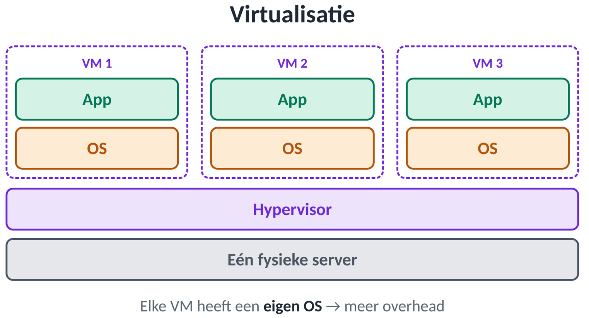
Containers. Containers gaan een stap verder: ze delen de kernel van één besturingssysteem op de host en bevatten enkel de applicatie en haar afhankelijkheden. Daardoor zijn ze licht, starten ze in een fractie van een seconde en zijn ze eenvoudig te verplaatsen. Een container start je vanuit een image: een vooraf verpakte applicatie.
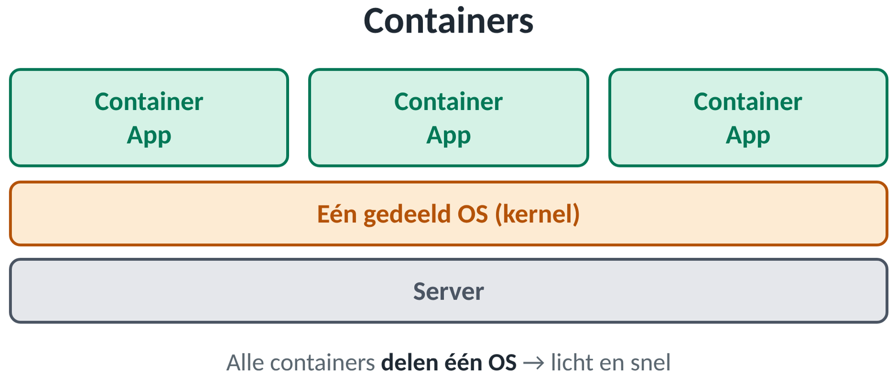
Docker en Podman. Dit zijn de bekendste tools om images te bouwen en containers te draaien. Docker werkt met een centrale daemon; Podman (Red Hat) werkt daemonless en ondersteunt rootless containers. De commando's zijn grotendeels gelijk: wat je met Docker doet, doe je meestal met Podman op dezelfde manier.
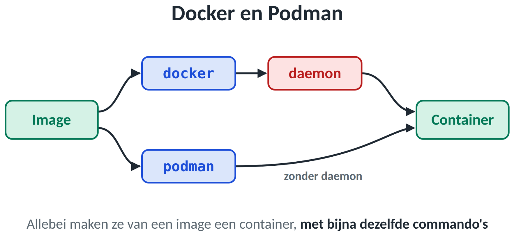
Docker heeft sinds versie 20.10 (2020) een stabiele rootless mode. Het verschil met Podman zit in hoe het werkt en of het standaard aanstaat.
| Docker | Podman | |
|---|---|---|
| Standaard | Daemon draait als root | Rootless, zonder daemon |
| Rootless | Aparte installatie nodig (dockerd-rootless-setuptool.sh install) | Werkt meteen voor elke gewone gebruiker |
| Hoe | Elke gebruiker krijgt een eigen dockerd die als die gebruiker draait | Geen daemon: elk Podman-commando is een gewoon proces van de gebruiker |
Orkestratie. Om veel containers over meerdere servers (nodes) te beheren, heb je een orchestration tool nodig. Die bepaalt waar containers draaien, schaalt automatisch op en af, en start containers opnieuw op een andere node als er één uitvalt. Kubernetes (K8s) is hier de standaard; Docker Swarm is eenvoudiger en ingebouwd in Docker, maar wordt veel minder gebruikt.
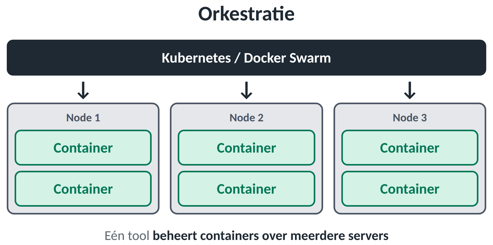
0.2 Demo 1: een webserver in een container¶
Met een eenvoudige demo laten we zien hoe containers werken met Podman.
Voor deze demo gebruiken we ServerXX.
We downloaden nu de image nginx (webserver).
student@serverXX:~$ podman image pull docker.io/library/nginx:latest
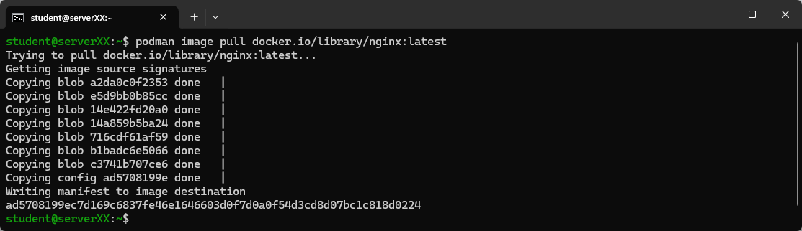
We hebben nu een Podman-image gedownload met de naam nginx. Zie een image als een vooraf verpakte applicatie. Een image bevat alles wat nodig is om een applicatie te draaien. In dit geval bevat onze image een webserver die statische inhoud aanbiedt.
We vragen de lijst met images op.
student@serverXX:~$ podman image ls
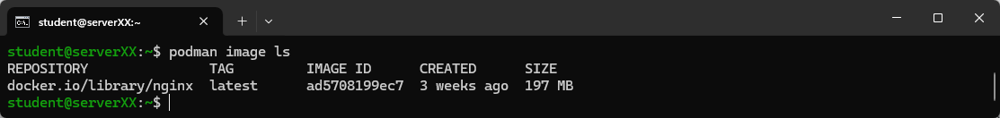
We achterhalen het IP-adres van de netwerkkaart.
student@serverXX:~$ nmcli device show ens160 | grep 'IP4.ADDRESS'
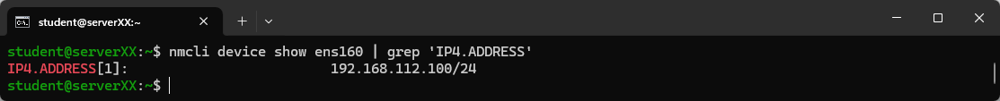
Om een container van deze image te starten, gebruiken we een commando dat instructies geeft om een nieuwe container te starten, gebaseerd op de gedownloade image, met een specifieke naam en gekoppeld aan een bepaalde netwerkpoort op de containerhost. We kiezen op de containerhost voor poort 8080. Zodra de container draait, krijgen we een uniek ID als bevestiging. Dit proces duurt slechts een fractie van een seconde.
student@serverXX:~$ podman run -d --name web -p 8080:80 nginx
07eaf1bfc326ae6184ecd982734e5986962c5e460c1fbe4387d68dfaac2488ef
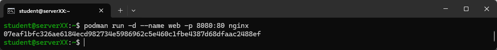
Om te controleren of de webserver draait, gebruiken we het IP-adres van de VM en de blootgestelde poort, in dit geval poort 8080.
Door deze gegevens in een browser in te voeren, kunnen we de webserver direct zien draaien.
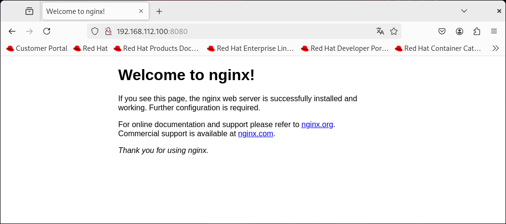
Samenvattend: we hebben een image gedownload (denk aan een vooraf verpakte applicatie), die we hebben gestart als een container. Na het starten hebben we gecontroleerd of alles correct werkt door de webserver te bezoeken via de browser.
We kunnen de container ook eenvoudig stoppen.
student@serverXX:~$ podman stop web
web
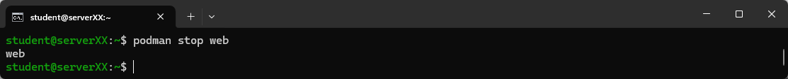
Je zal zien dat de webpagina nu niet meer bereikbaar is.
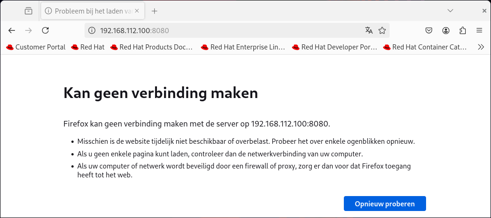
We kunnen de container nu opnieuw starten.
student@serverXX:~$ podman start web
web
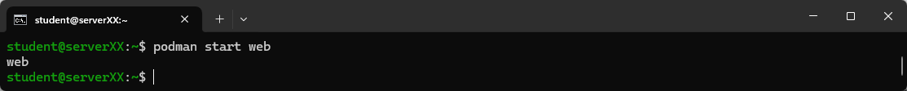
Uiteraard zal de webpagina nu opnieuw bereikbaar zijn.
Omdat containers lichter en sneller zijn dan virtuele machines, kunnen we de container eenvoudig stoppen en starten met enkele commando's. Dit maakt het beheer van applicaties bijzonder efficiënt. Containers bieden flexibiliteit: je kan ze stoppen, herstarten en zelfs verwijderen, allemaal met eenvoudige commando’s.
0.3 Demo 2: een eigen image bouwen¶
0.3.1 Stap één: coderen¶
In het onderstaande voorbeeld schrijven we code en bouwen we die om tot een Podman-image.
Een image is als een gestopte container, of een sjabloon voor hoe je een container bouwt. We bouwen een image, zetten die in een registry en starten er een container van op.
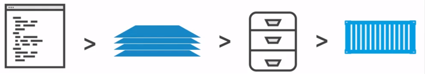
In dit voorbeeld kiezen we voor Bash. Misschien begrijp je nog niet alles, maar het is maar een demo. Later wordt alles duidelijker als je zelf aan de slag gaat.
- Maak een nieuwe directory voor je project, bijvoorbeeld docker-linux, en ga naar deze directory.
student@serverXX:~$ mkdir docker-linux
- Maak in deze directory een bestand genaamd Dockerfile aan zonder extensie.
student@serverXX:~$ touch docker-linux/Dockerfile
- De inhoud van de containerfile is de volgende.
student@serverXX:~$ nano docker-linux/Dockerfile
# Gebruik een officiële Fedora image als basis
FROM fedora:latest
# Stel werkdirectory in
WORKDIR /app
# Schrijf een shell commando dat "Hello, World" print
CMD ["echo", "Hello, World"]
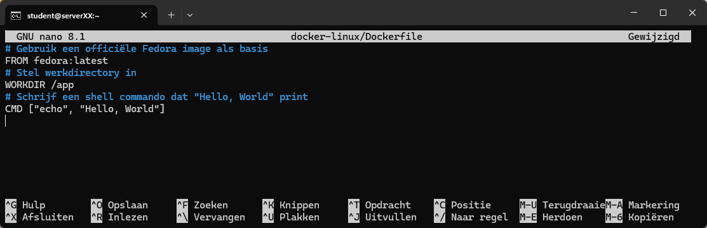
Uitleg van de Dockerfile:
-
FROM fedora:latest
Dit commando gebruikt een officiële Fedora-image als basis. Deze image bevat Bash en is geschikt voor Linux-omgevingen. -
WORKDIR /app
Stelt de werkdirectory binnen de container in. Dit is in dit geval optioneel. -
CMD ["echo", "Hello, World"]
Dit commando voert echo uit om de tekst "Hello, World" naar de standaarduitvoer te schrijven.
Het CMD-commando bepaalt wat er wordt uitgevoerd wanneer de container start.
0.3.2 Stap twee: Podman-image aanmaken en opslaan¶
Ga naar de directory waarin de Dockerfile staat.
student@serverXX:~$ cd docker-linux/
Bouw de Podman-image met de naam hallo-test vanuit Bash:
student@serverXX:~/docker-linux$ podman build -t hallo-test .
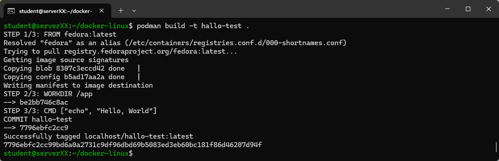
We hebben nu een image.
Wanneer je “podman build -t hallo-test .” uitvoert, doet Podman het volgende:
-
Lezen van de Dockerfile
Podman zoekt in de huidige directory (.) naar een bestand genaamd Dockerfile. -
Uitvoeren van instructies
Podman voert de instructies in de Dockerfile één voor één uit. Dat kan bijvoorbeeld het ophalen van een basisimage, het kopiëren van bestanden of het installeren van software zijn. -
Image bouwen
Elke uitgevoerde instructie creëert een laag in de nieuwe image. Zodra alle stappen zijn uitgevoerd, resulteert dit in een complete image. -
Image taggen
De voltooide image wordt opgeslagen met de naam en tag die je hebt opgegeven (hallo-test in dit geval). -
Lokaal opslaan
De nieuwe image wordt lokaal op je computer opgeslagen.- Je kan een image ook bewaren op het internet, bijvoorbeeld op Docker Hub. We komen daar later op terug.
Je kan de lokale images als volgt opvragen.
student@serverXX:~/docker-linux$ podman images
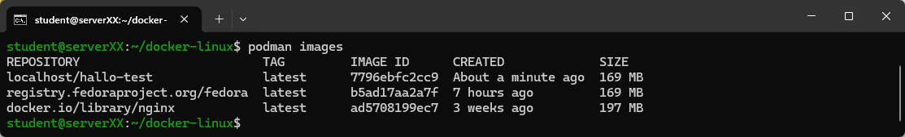
0.3.3 Stap drie: Podman-container uitvoeren¶
Je kunt deze image nu gebruiken om containers te draaien met het commando podman run. Het maakt nu trouwens niet meer uit in welke directory je je bevindt.
student@serverXX:~/docker-linux$ cd
student@serverXX:~$ podman run hallo-test
Hello, World
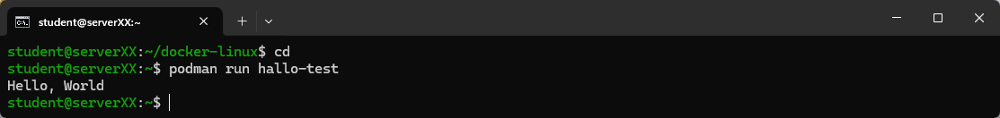